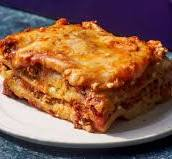

Home
Lasagna

Description
This classic lasagna is rich, cheesy, and full of flavor. It's perfect for a family dinner or to impress your guests.
Layered with noodles, meat sauce, and creamy ricotta, it’s a hearty Italian favorite you'll love.
Ingredients
- 1 pound ground beef
- 1 onion, chopped
- 2 cloves garlic, minced
- 1 can tomato sauce
- 9 lasagna noodles
- 2 cups ricotta cheese
- 3 cups shredded mozzarella cheese
- 1/2 cup grated Parmesan cheese
- Salt and pepper to taste
Steps
- Preheat oven to 375°F (190°C).
- Cook ground beef, onion, and garlic in a pan until browned.
- Stir in tomato sauce and simmer for 15 minutes.
- Boil lasagna noodles until al dente, then drain.
- Spread sauce in baking dish, layer noodles, ricotta, mozzarella, and repeat.
- Top with Parmesan and bake for 25-30 minutes.
- Let it cool for 10 minutes before serving.